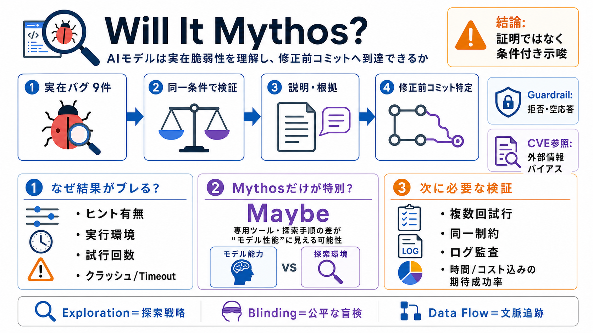

Qwen 3.6 35B crushes Gemma 4 26B on my tests - Reddit
Both models start with identical inference performance but Gemma 4's prefill speeds fluctuate with growing context. Qwen…

Both models start with identical inference performance but Gemma 4's prefill speeds fluctuate with growing context. Qwen…
This video examines which local AI model, Gemma 4 or Qwen 3.6, is best for your coding agent, highlighting the 3x3 bench…
# Gemma 4 vs Qwen for AI Pentesting. Choosing between Gemma 4 and Qwen for AI pentesting is not really a benchmark probl…
# Gemma 4, Phi-4, and Qwen3: Accuracy–Efficiency Tradeoffs in Dense and MoE Reasoning Language Models. Mixture-of-expert…
Anthropic Released Mythos Benchmarks Today It's a huge leap from Opus 4.6. So much so, Anthropic says this model is too …